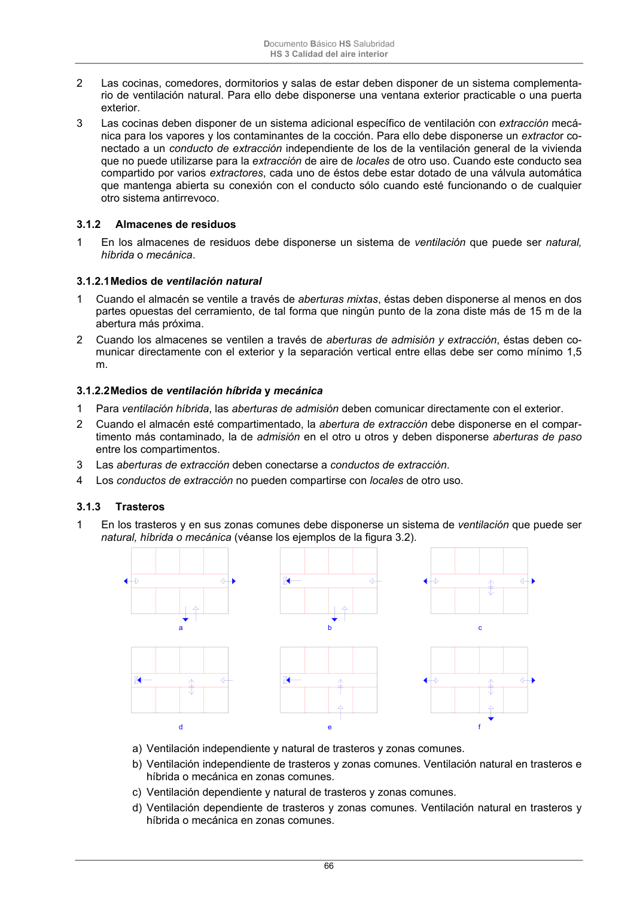

DB-HS Salubridad · edición 2022-06-14 · capa oficial
Documento DB-HS-oficial · SHA-256 del PDF 68df3caacc95f71aee2ec1ba7b2c65ae66155c21e3a8785521b8fdd4fd640d3b
Copia fiel del PDF fuente · Fuente oficial
Ficha de la disposición en la fuente oficial
Formatos: JSON del segmento · Markdown
3.1.2.1 Medios de ventilación natural 1 Cuando el almacén se ventile a través de aberturas mixtas, éstas deben disponerse al menos en dos partes opuestas del cerramiento, de tal forma que ningún punto de la zona diste más de 15 m de la abertura más próxima. 2 Cuando los almacenes se ventilen a través de aberturas de admisión y extracción, éstas deben co- municar directamente con el exteriory la separación vertical entre ellas debe ser como mínimo 1,5 m.
